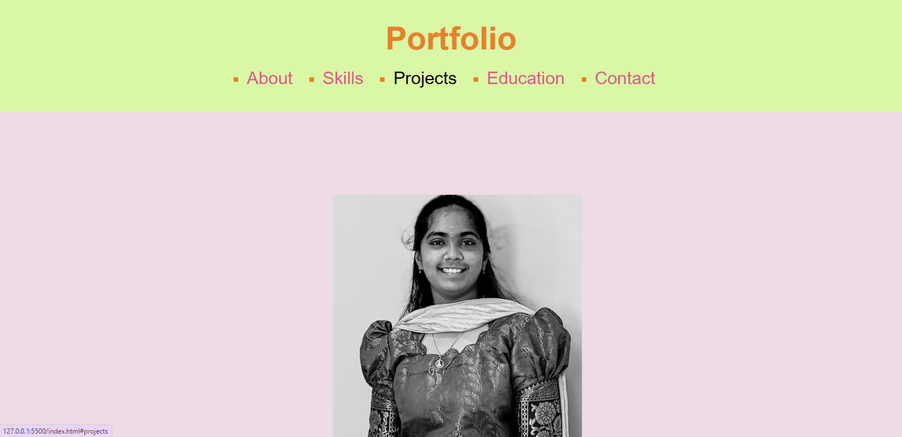
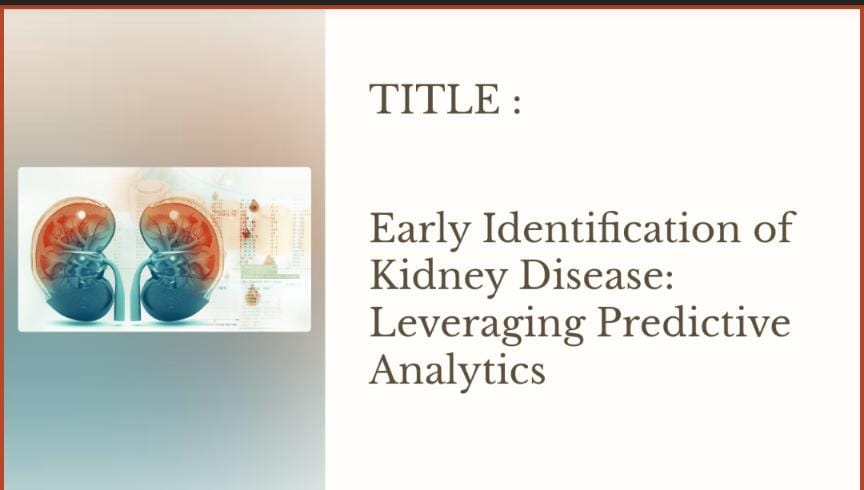

Project 1: Personal Portfolio
A portfolio is a curated collection of work samples, projects, and achievements that showcase an individual's skills,
experience, and expertise. It is commonly used by professionals, artists, and students to present their capabilities to
potential employers or clients.

Project 2: Curreny Converter
A currency converter is a tool or software application that allows users to calculate the equivalent value of one
currency in terms of another based on current exchange rates. It is widely used for travel, international transactions,
and financial analysis.

Project 3: kidney Disease
Kidney disease prediction involves using data analysis and machine learning techniques to assess the likelihood of an
individual developing kidney-related health issues. This predictive tool helps in early detection and proactive
management of kidney diseases.